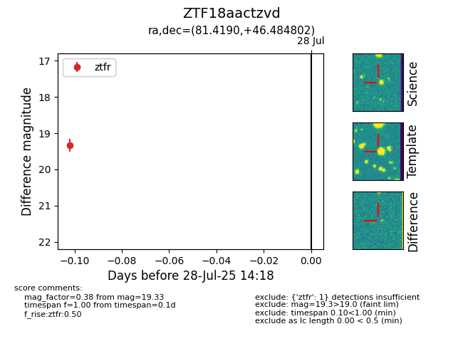

Target ZTF18aactzvd at 2025-07-28 14:18, see:
FINK: fink-portal.org/ZTF18aactzvd
Lasair: lasair-ztf.lsst.ac.uk/objects/ZTF18aactzvd
ALeRCE: alerce.online/object/ZTF18aactzvd
alt names
ZTF18aactzvd (ztf,fink)
coordinates:
equatorial (ra, dec) = (81.4190,+46.48480)
galactic (l, b) = (163.0658,+6.12375)
photometry
last ztfr=19.33
1 ztfr detections
